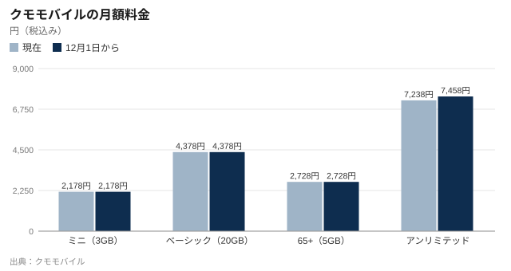

クモモバイル、「アンリミテッド」を12月から220円値上げ
データ無制限の「クモ アンリミテッド」は12月1日から月7,458円に、海外で使うアジアの24時間パスは1,080円になる。ほかの3プランと各種割引は据え置き。消費生活センターは「月25GB未満なら乗り換えで安くなる場合がある」と使用量の確認を呼びかけている。

携帯電話大手のクモモバイルは2日、データ無制限の「クモ アンリミテッド」の月額料金を12月1日から220円引き上げると発表した。5Gネットワークへの投資を続けるなか、設備コストの上昇が続いているためとしている。同社は春川中央駅ビルに、みのり県内最大の店舗を構えている。
クモ アンリミテッドは月7,238円から7,458円（税込み）となり、上げ幅は3.0%。既存の契約を含むすべての利用者が対象で、12月利用分（2027年1月支払い分）から新料金になる。月のデータ使用量が3GB以下の場合に1,650円を差し引く割引は続くため、その月の料金は5,588円から5,808円になる。
海外ローミング「クモワールド」のアジア向け24時間パスも、980円から1,080円に上がる。11月30日までに旧料金で購入したパスは、2027年1月31日まで使える。
| プラン・オプション | データ量 | 現在 | 12月1日から | 差額 |
|---|---|---|---|---|
| クモ アンリミテッド | 無制限 | 7,238円 | 7,458円 | +220円 |
| クモ アンリミテッド（月3GB以下） | — | 5,588円 | 5,808円 | +220円 |
| クモワールド 24時間パス：アジア | 24時間 | 980円 | 1,080円 | +100円 |
| クモ ミニ | 3GB | 2,178円 | 2,178円 | 変更なし |
| クモ ベーシック | 20GB | 4,378円 | 4,378円 | 変更なし |
| クモ 65+ | 5GB | 2,728円 | 2,728円 | 変更なし |
既存の契約を含め、2026年12月利用分（2027年1月支払い分）から新料金。各種割引は変わらない（家族割は1回線あたり、ベーシックとアンリミテッドで2回線550円・3回線1,100円・4〜10回線1,210円、65+は550円、ミニは対象外）。プラン変更は無料で、11月30日までの手続きで12月1日から適用。出典：クモモバイル（2026年10月2日発表）
据え置きのプランと割引
ほかに変わるものはない。「クモ ミニ」（3GB、月2,178円）、「クモ ベーシック」（20GB、4,378円）、「クモ 65+」（5GB、2,728円）の料金、アジア以外の24時間パス、通話オプション、端末補償は据え置き。各種割引もそのままだ。
回線が多いほど割引額が大きくなる家族割も変わらない。ベーシックとアンリミテッドは、家族グループが2回線なら1回線あたり月550円、3回線なら1,100円、4〜10回線なら1,210円を割り引く。65+は回線数にかかわらず550円引きで、ミニは家族割の対象外だ。

家計への影響は
アンリミテッドを1人で使う場合、負担増は年2,640円。2回線を使う夫婦は、家族割を引いた後の月額が1万3,376円から1万3,816円になる。3回線の家族なら1回線あたり1,100円引きで（7,458円−1,100円）×3＝1万9,074円となり、現在より月660円増える。
ほかの料金と割引はすべて据え置いた。改定はネットワークを最も多く使うプランに限っている。
クモモバイル広報 藤田麻美さん
同社は10月中に、対象の利用者にSMSとメールで知らせるという。
まず使用量の確認を
みのり県消費生活センターは、アンリミテッドの利用者は今回を機に実際のデータ使用量を確かめてほしいと話す。ベーシックは20GBで4,378円、追加データは1GBあたり550円。月25GB使う場合でも、5GBを追加したベーシックは7,128円で、値上げ後のアンリミテッドより安い。おおむね25GBを超えると、アンリミテッドのほうが割安になる。
差が大きい人もいる。月18GBを使う人がアンリミテッドのままなら12月から7,458円だが、ベーシックなら4,378円で、毎月3,080円安くなる。
何年も前に無制限を選んで、そのままになっている人が多い。直近3カ月の使用量はMy Kumoのアプリで確認できる。25GBを大きく下回るなら、12月までにベーシックを検討してほしい。
みのり県消費生活センター相談員 石川陽子さん
石川さんは、料金改定の時期には携帯会社をかたる詐欺SMSも増えやすいと注意を促す。クモモバイル自身も先月、同社を装った偽のSMSに注意するよう呼びかけた。料金改定を知らせるメッセージのリンクは開かず、公式アプリで確認するよう勧めている。
プラン変更は無料で、解約金もかからない。11月30日までに手続きすれば12月1日から新しいプランが適用されるため、期限内に切り替えれば新料金を払うことはない。
春川中央店
春川中央駅ビル2階のクモショップ春川中央の営業時間は毎日午前10時〜午後8時で、新規契約と乗り換えの受け付けは午後6時30分まで。灯籠まつりの10、11日は午後9時まで営業する。午後は待ち時間が長くなるため来店予約を勧めている。プラン変更はMy Kumoのアプリからもできる。
市議会は9月30日に上下水道料金の値上げを可決したばかり。値上げが相次ぎ、暮らしの負担は来月の市長選でも争点になっている。


コメント 4
アンリミテッド歴3年
記事を読んでMy Kumoを見たら月11GBでした。今夜ベーシックに変えます。計算ありがとう。
タケシM
春川中央店を予約しようとしたら、空きはまつりの後。アプリでやります。
ゆずばあちゃん
どれだけデータを使っているのか分かりません。孫に設定してもらったので、記事にある通り確認してもらいます。
北町の旅好き
自分にはプランよりアジアのパスの100円の方が痛い。11月30日までに何枚か買っておきます。